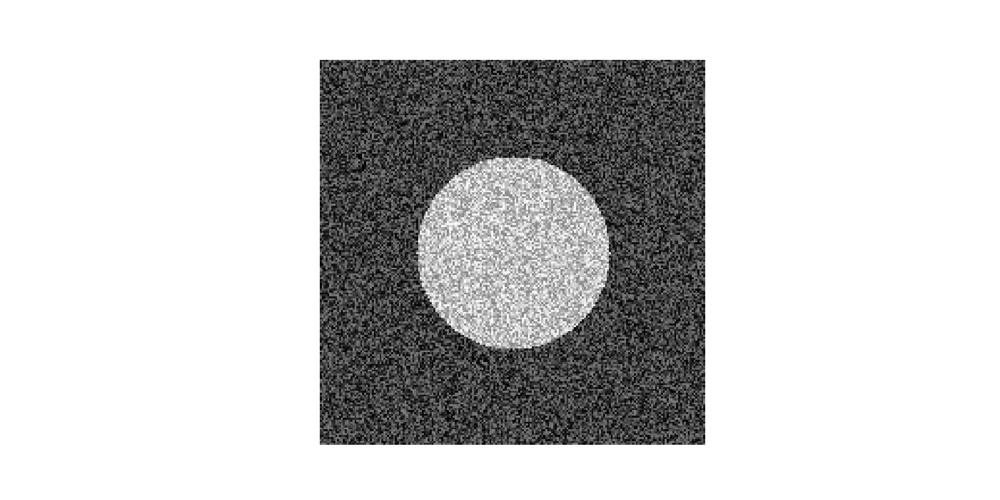
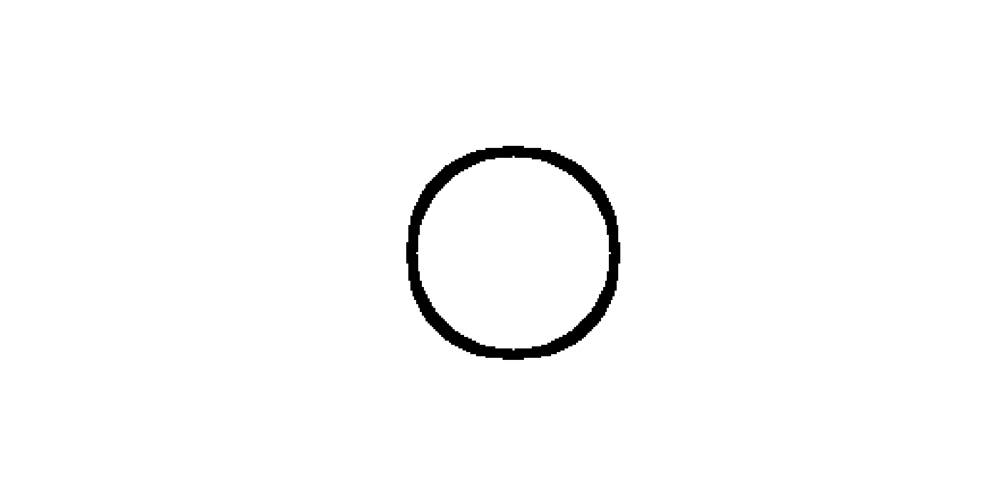
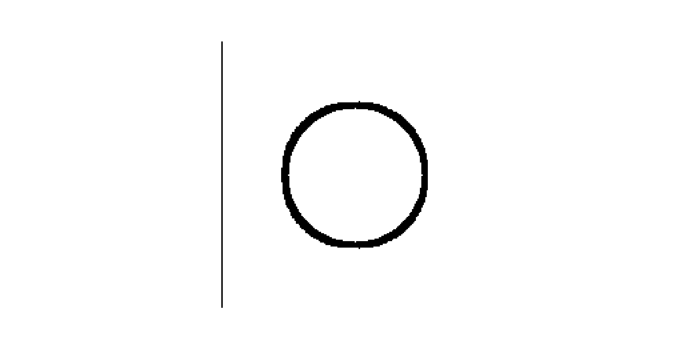
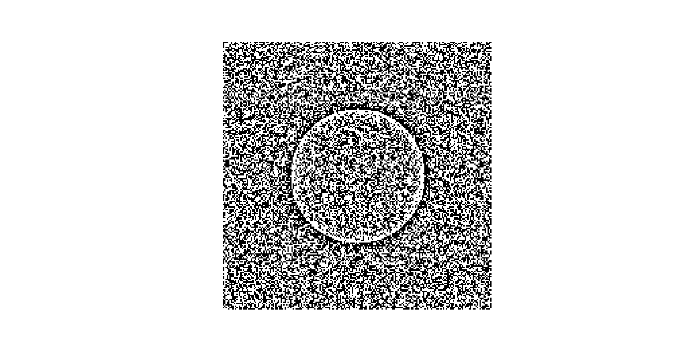
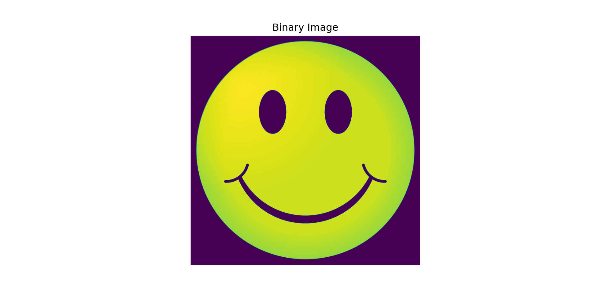
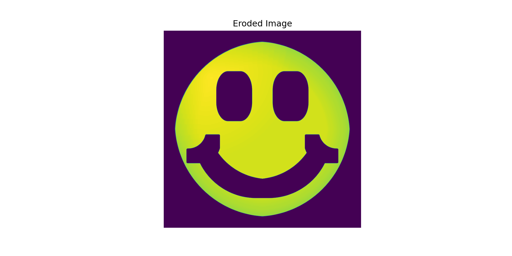
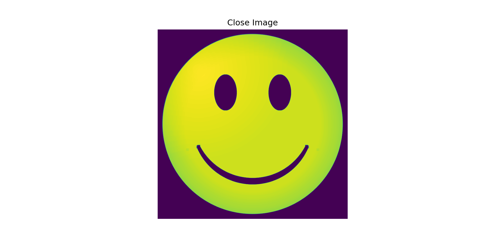
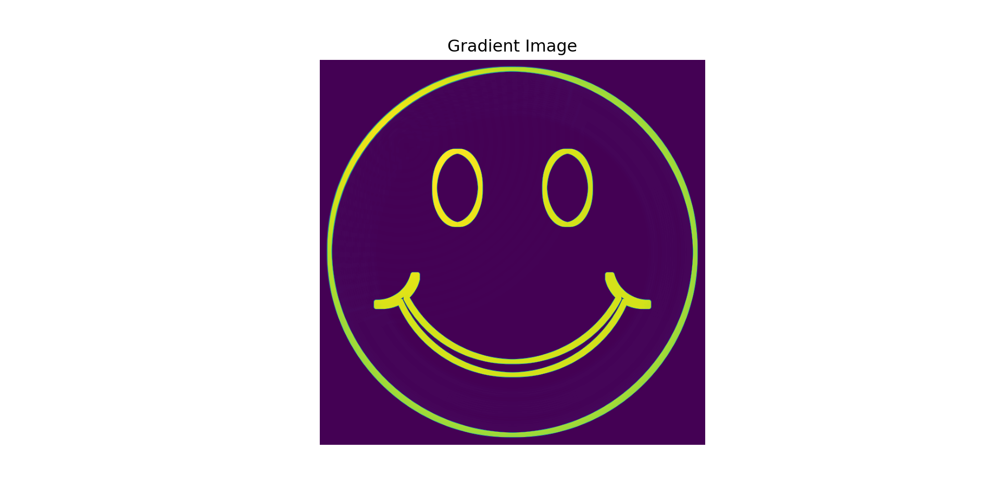
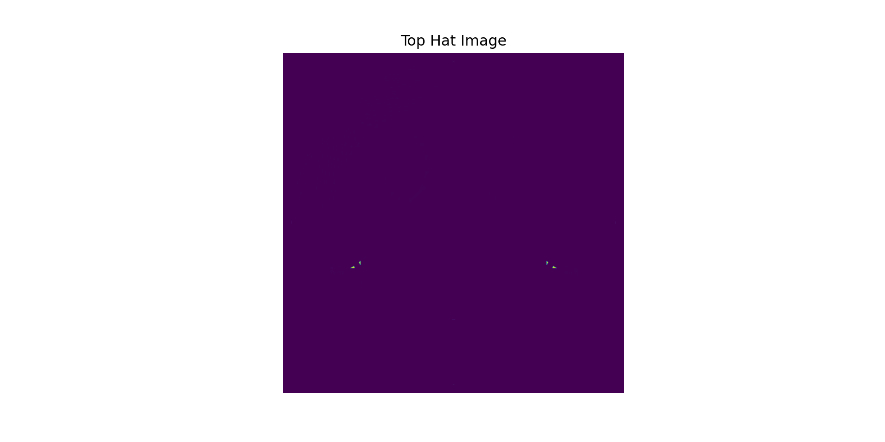

plt.imshow(image_circle, cmap="gray")
plt.axis("off")
plt.show()
plt.imshow(image_gradient, cmap="gray")
plt.axis("off")
plt.show()
plt.imshow(noisy_circle, cmap="gray")
plt.axis("off")
plt.show()
_, global_thresh1 = cv2.threshold(image_circle, 127, 255, cv2.THRESH_BINARY)
plt.imshow(global_thresh1, cmap="gray")
plt.axis("off")
plt.show()
_, global_thresh2 = cv2.threshold(image_gradient, 127, 255, cv2.THRESH_BINARY)
plt.imshow(global_thresh2, cmap="gray")
plt.axis("off")
plt.show()
_, global_thresh3 = cv2.threshold(noisy_circle, 127, 255, cv2.THRESH_BINARY)
plt.imshow(global_thresh3, cmap="gray")
plt.axis("off")
plt.show()
adaptive_thresh1 = cv2.adaptiveThreshold(image_circle, 255, cv2.ADAPTIVE_THRESH_MEAN_C, cv2.THRESH_BINARY, 11, 2)
plt.imshow(adaptive_thresh1, cmap="gray")
plt.axis("off")
plt.show()
adaptive_thresh2 = cv2.adaptiveThreshold(image_gradient, 255, cv2.ADAPTIVE_THRESH_MEAN_C, cv2.THRESH_BINARY, 11, 2)
plt.imshow(adaptive_thresh2, cmap="gray")
plt.axis("off")
plt.show()
adaptive_thresh3 = cv2.adaptiveThreshold(noisy_circle, 255, cv2.ADAPTIVE_THRESH_MEAN_C, cv2.THRESH_BINARY, 11, 2)
plt.imshow(adaptive_thresh3, cmap="gray")
plt.axis("off")
plt.show()
_, otsu_thresh1 = cv2.threshold(image_circle, 0, 255, cv2.THRESH_BINARY + cv2.THRESH_OTSU)
plt.imshow(otsu_thresh1, cmap="gray")
plt.axis("off");
plt.show()
_, otsu_thresh2 = cv2.threshold(image_gradient, 0, 255, cv2.THRESH_BINARY + cv2.THRESH_OTSU)
plt.imshow(otsu_thresh2, cmap="gray")
plt.axis("off")
plt.show()
_, otsu_thresh3 = cv2.threshold(noisy_circle, 0, 255, cv2.THRESH_BINARY + cv2.THRESH_OTSU)
plt.imshow(otsu_thresh3, cmap="gray")
plt.axis("off")
plt.show()Procesado de Señales e Imágenes Médicas
Ingeniería Biomédica
2024-08-12
Practical Examples





Example of Morphological Operations





